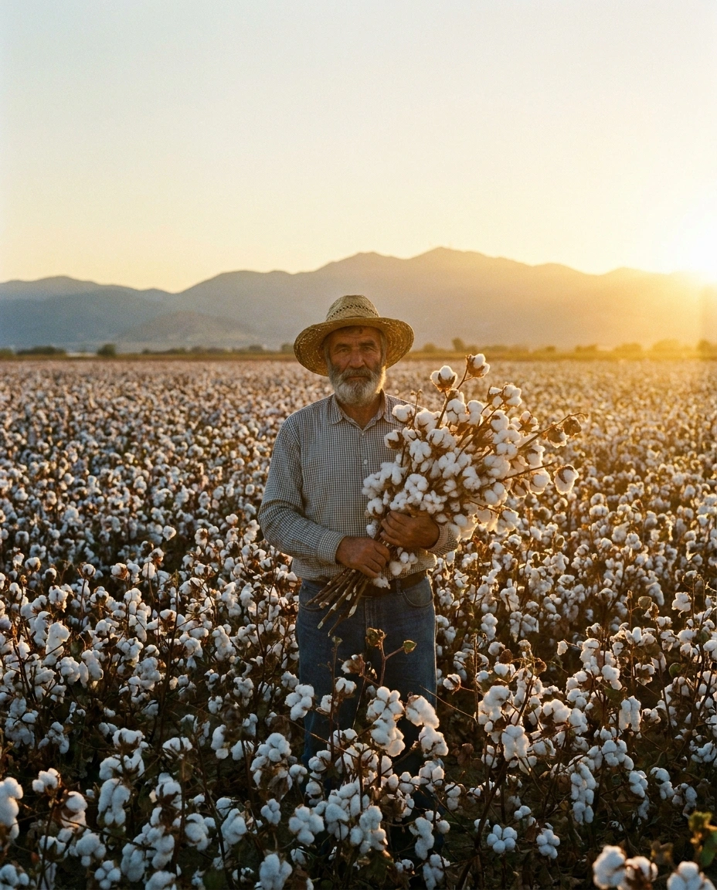

ХЛОПЧАТНИК
Природа насчитывает 37 видов хлопчатника, но в сельском хозяйстве используют только пять из них. В нашей стране выращивают два вида: хлопчатник обыкновенный (он же мексиканский) — средневолокнистый вид и хлопчатник перуанский (его также называют египетским) — тонковолокнистый вид. Второй вид требует больше тепла и времени для созревания, поэтому его возделывают лишь в самых южных районах, где развито хлопководство.
Хлопок используется для получения хлопчатобумажной пряжи. Из хлопка вырабатывают ткани, трикотаж, нити, вату и другое. Пух и подпушек хлопка применяют в химической промышленности как сырьё для изготовления искусственного волокна и нитей, плёнки, лаков и т. п. Его используют во взрывчатых веществах.

Направления селекции:
- Холодостойкость
- Теневыносливость
- Засухоустойчивость
- Преодоление фотопериодизма
- Скороспелость
